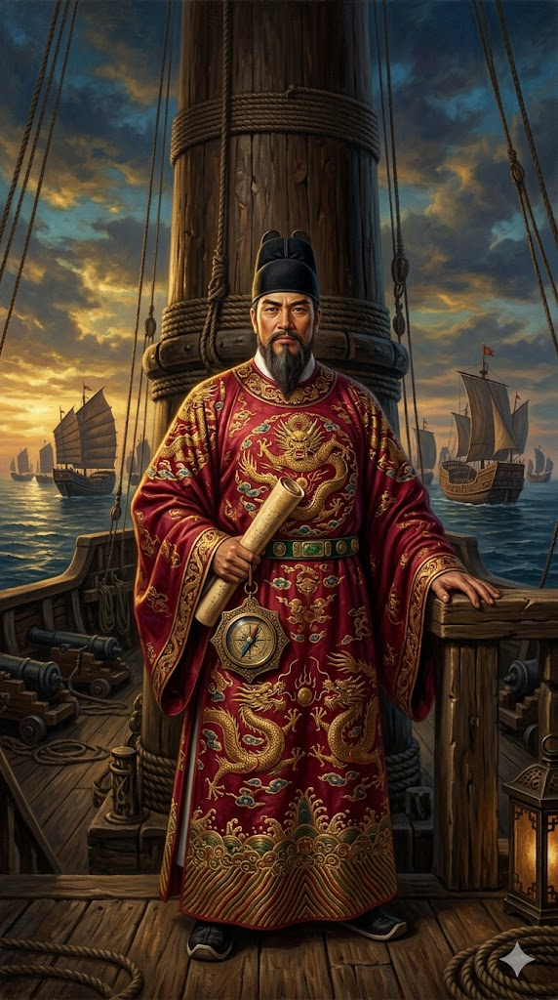

ג'נג חה

לחץ על התמונה להגדלה
מקור ומשמעות השם המלא (אטימולוגיה)
שם הלידה המקורי: מא חה (Ma He / 马和)
ג'נג חה נולד עם השם "מא חה". הוא השתייך לקבוצת המיעוט האתני "חוּי" (Hui) – מוסלמים שחיו בדרום-מערב סין.
פירוש "מא" (Ma): זהו שם משפחה סיני נפוץ בקרב מוסלמים בסין, המהווה לרוב קיצור או תעתיק סיני לשם "מוחמד".
פירוש "חה" (He): משמעות המילה בסינית היא "שלום", "הרמוניה" או "פיוס". שם זה משקף תקוות הורים אוניברסליות באזור שידע לא מעט סכסוכים.
השם המלכותי: ג'נג חה (Zheng He / 郑和)
השם בו הוא מוכר בהיסטוריה אינו שם משפחתו המקורי, אלא שם תואר וכבוד שהוענק לו.
הסיבה לשינוי: בשנת 1404, בעקבות תרומתו הצבאית המכרעת של מא חה לניצחונו של הקיסר יוּנְגְלֶה (בקרב על הגנת מאגר המים של העיר 'ג'נְגְלוּנְבָּה'), החליט הקיסר להעניק לו חסות מלכותית.
פירוש: הקיסר העניק לו את שם המשפחה האימפריאלי ג'נג (Zheng). מאותו רגע ואילך, הוא נודע בשם "ג'נג חה" כאות להשתייכותו לאליטה המקורבת ביותר לקיסרות מינג.
כינויים היסטוריים נוספים: סאן-באו טאי-ג'יין
הוא נודע בסין גם בתואר "סאן-באו טאי-ג'יין" (Sanbao Taijian). "סאן באו" פירושו "שלושת התכשיטים" (מונח בודהיסטי שהעיד על כבודו, או רמז להגייתו הסינית של שמו הערבי), ו"טאי-ג'יין" פירושו סריס ראשי בחצר הקיסרות.
ילדות, טרגדיה ועלייה לגדולה
ילדותו של ג'נג חה רצופה בטרגדיה אלימה. הוא נולד בשנת 1371 במחוז יונאן (Yunnan) שבדרום-מערב סין, למשפחה מוסלמית בעלת מסורת ענפה. אביו וסבו קיימו שניהם את מצוות החג' (העלייה לרגל למכה), מה שהעשיר את ידעו של הילד הצעיר על הגיאוגרפיה ועל העולם שמחוץ לסין מסיפורי משפחתו.
בשנת 1381, כשהיה רק בן 10, פלש צבא שושלת מינג למחוז יונאן כדי לדכא את שרידי השלטון המונגולי. אביו נהרג בקרב, והילד "מא חה" נשבה על ידי צבא מינג. כנהוג בשושלות הסיניות לגבי שבויי מלחמה צעירים, הוא עבר סירוס (כדי שלא יוכל להקים שושלת מתחרה) ונשלח לשרת כעבד-סריס באחוזתו של הנסיך ג'ו די (Zhu Di), בנו של קיסר מינג.
למרות הטראומה, מא חה התגלה כנער חסון בצורה יוצאת דופן (הוא מתואר לעיתים כמתנשא לגובה של כשני מטרים), מבריק, ובעל חושים צבאיים חדים. הוא הפך מחייל צעיר למפקד, ולחברו ואיש אמונו הקרוב ביותר של הנסיך. כאשר הנסיך ג'ו די מרד באחיינו ותפס את כס השלטון והפך ל"קיסר יונגלה", מא חה – כעת ג'נג חה – זכה לעמדת כוח חסרת תקדים כסריס הראשי והמפקד הצבאי העליון של הקיסרות.
אידאולוגיה, מניעים ותפיסת עולם
המסעות של ג'נג חה אינם מסעות גילוי במובן המערבי; הם היו מבצעים צבאיים-דיפלומטיים ענקיים להקרנת עוצמה (Power Projection).
המניע הפוליטי והדיפלומטי: הקיסר יונגלה, שתפס את השלטון בהפיכה עקובה מדם, היה זקוק ללגיטימציה. הוא שאף להוכיח לעולם שהוא שליט כדור הארץ (בן השמיים), ולהרחיב את "מערכת המנחות" הסינית. המטרה של ג'נג חה לא הייתה לכבוש ארצות רחוקות בנשק, אלא "לשכנע" את שליטי הים הסיני הדרומי והאוקיינוס ההודי להכיר בעליונותה של סין ולשלוח שגרירים ומנחות לקיסר מינג. הצי העצום נועד לייצר הלם ויראה (Shock and Awe) בקרב המלכים המקומיים.
המניע הכלכלי: במקביל, המסעות שימשו למסחר ממלכתי מסיבי. סין ייצאה משי משובח, חרסינה (פורצלן) ותה, ויבאה בתמורה תבלינים, שנהב, פנינים ותרופות אקזוטיות.
תפיסת העולם של ג'נג חה: כאדם מוסלמי שמוביל צי באוקיינוס ההודי (שבו האסלאם היה דומיננטי במסחר), היה לו יתרון עצום. הוא יכול היה לתקשר ולהתפלל עם סוחרים ערבים, פרסים והודים. הוא אימץ גישה של "דיפלומטיה חמושה" – הוא נקט באלימות רק נגד שודדי ים או שליטים שסירבו להראות כבוד לקיסרות הסינית, אך ברוב המקרים פעל בדרכי שלום וחילופי סחר מתוך עוצמה.
נסיבות היסטוריות למסע (עידן צי האוצר)
הופעתו של "צי האוצר" מתרחשת בתקופת עוצמה חסרת תקדים של שושלת מינג (Ming Dynasty) בראשית המאה ה-15. סין הייתה באותה עת האימפריה העשירה, המאוכלסת והמתקדמת ביותר טכנולוגית בעולם. מספנות ענק נבנו סביב הבירה נאנג'ינג (Nanjing). פיתוח טכנולוגיות ימיות כגון המצפן המגנטי, כותלי שדר המונעים חדירת מים (Watertight compartments), ומפרשיות מתקדמות הגיעו לשיא של אלפי שנות התפתחות סינית. במקביל, באירופה רק החלו להתפתח הקרוולות הראשונות, שהיו קטנות לאין שיעור מהספינות הסיניות. זהו חלון זמן היסטורי צר שבו סין, בדרך כלל אימפריה יבשתית המסתגרת כלפי פנים, בחרה להשקיע את העודף הכלכלי האדיר שלה בשליטה ימית גלובלית.
המסעות: שבע הפלגותיו של צי האוצר (1405-1433)
בשנת 1405 יצא ג'נג חה למסעו הראשון כמפקד עליון של צי שאין לו תקדים בהיסטוריה. בסך הכל ביצע שבעה מסעות גדולים לאורך 28 שנים.
מסלולי ההפלגות:
- בים הסיני הדרומי: הצי ביקר בוייטנאם, סיאם (תאילנד), סומטרה, וג'אווה (אינדונזיה). הם חיסלו אימפריית שודדי ים במצר מלאקה וביססו שם סדר שיגן על המסחר הסיני.
- באוקיינוס ההודי: הם הגיעו לציילון (סרי לנקה), שם התערבו במלחמת אזרחים, ולעיר הנמל העשירה קליקוט (Calicut) שבהודו.
- במפרץ הפרסי ובים האדום: במסעות המאוחרים, הצי הגיע להורמוז, לעדן, ומשלחות משנה אפילו הגיעו לנמל ג'דה (משם חלק מצוותו המוסלמי של ג'נג חה ערך חג' במכה).
- בחוף המזרחי של אפריקה: הצי המשיך דרומה עד חופי סומליה וקניה של ימינו (מוגדישו, מלינדי). משם הם הביאו לקיסר סין מתנות אקזוטיות, כולל הג'ירפה המפורסמת, שהסינים זיהו בטעות כ"צִ'ילִין" (Qilin) - חיה מיתולוגית המסמלת שלטון קיסרי צודק ומבורך משמיים.
גילויים מרכזיים, השפעות, ותעלומת הסיום
ההשפעה הגיאופוליטית: מסעותיו של ג'נג חה לא נועדו לגלות ארצות לא-מיושבות. השפעתם העצומה הייתה ביסוס הגמוניה ויציבות גלובלית בניהול סיני. הוא יצר רשת מסחר ודיפלומטיה חסרת תקדים מהאוקיינוס השקט ועד מזרח אפריקה. קהילות סיניות (פזורה) החלו לשגשג בדרום מזרח אסיה (תהליך שנמשך עד היום), ושליטים מעשרות מדינות שלחו שגרירים לבירה הסינית לאות הכנעה וכבוד.
התוצאה: סין השמידה את צי האוצר שלה. תוכניות בניית הספינות נשרפו, ונאסר בחוק להפליג מעבר לים באוניות מרובות תרנים. התיעוד על מסעותיו של ג'נג חה כמעט ונמחק כליל מהארכיונים הרשמיים.
החשיבות ההיסטורית הטרגית (ההזדמנות המוחמצת): חשיבותו של ג'נג חה בהיסטוריה של עידן התגליות היא מרתקת במיוחד בשל "מה שלא קרה". כשסין פנתה פנימה והשמידה את הצי שלה בשנות ה-1430, היא הותירה ואקום עצום באוקיינוס ההודי. עשרות שנים ספורות לאחר מכן (1498), הגיע ואסקו דה גאמה הפורטוגלי להודו עם כמה ספינות קטנות וחמושות, ומצא אוקיינוס פתוח ללא מעצמה שמגנה עליו. הוויתור הסיני על הים אפשר את תחילת הקולוניאליזם האירופאי, וכיוון את מסלול ההיסטוריה העולמית לטובת המערב.
מקורות וביבליוגרפיה (אימות מחקר)
- "הרישומים האמיתיים של שושלת מינג" (Ming Shilu): התיעוד ההיסטורי הרשמי של החצר הסינית. למרות שפקידים מאוחרים ניסו להשמיד את רישומי ג'נג חה, מידע על המסעות נותר במסמכים בירוקרטיים אלו.
- כתובת גאלה בשלוש שפות (Galle Trilingual Inscription): לוח אבן היסטורי שג'נג חה הותיר בסרי לנקה בשנת 1409. הכתובת כתובה בסינית, טמילית ופרסית, ומשקפת את האופי הדיפלומטי והרב-תרבותי של צי האוצר.
- מחקר היסטורי מודרני מקיף: Dreyer, Edward L. (2007). Zheng He: China and the Oceans in the Early Ming Dynasty, 1405–1433. Pearson Longman.
- מחקר פופולרי ומעמיק: Levathes, Louise (1994). When China Ruled the Seas: The Treasure Fleet of the Dragon Throne, 1405-1433.